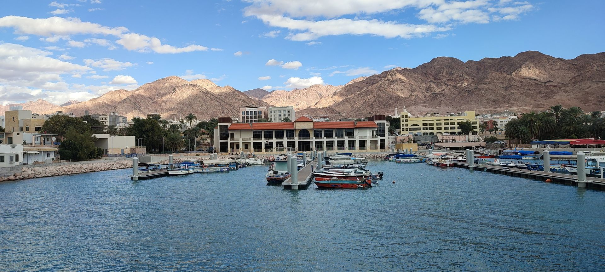
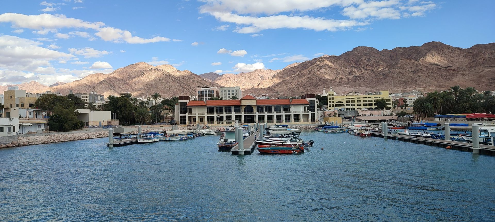

Overview
Embark on a relaxing glass-bottom boat tour in Aqaba and discover the vibrant underwater world of the Red Sea. Marvel at colorful coral reefs, tropical fish, and maybe even spot a sea turtle—all from the comfort of your seat. You also have the opportunity to jump in for a snorkeling adventure with provided equipment. This is a private boat experience, ensuring privacy and comfort for your group.
Quick Facts
| Duration | 2 Hours |
|---|---|
| Group Size | Private Boat (Max 6 people) |
| Language | English, Arabic |
| Inclusions | Water, Free towels, Snorkeling equipment, Life jackets, Safety briefing. |
| Location | Aqaba Marine Park |
Highlights
- See Aqaba’s famous coral reefs and marine life through a crystal-clear glass bottom.
- Opportunity to go snorkeling with provided equipment and towels.
- Private boat experience for up to 6 guests.
- Guided by experienced local boat captains.
- Comfortable shaded seating and water on board.
- Photo opportunities of Aqaba’s coastline and the Red Sea.
Gallery
 

Reviews
★★★★★
“A fantastic way to see the coral reefs with my kids! The boat was comfortable and the crew made it fun for everyone.”
“A fantastic way to see the coral reefs with my kids! The boat was comfortable and the crew made it fun for everyone.”